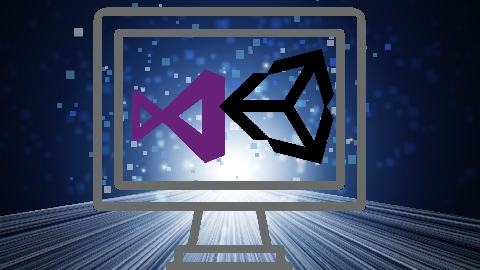
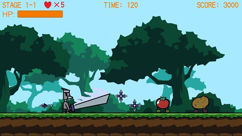

開発環境
・OS：Windows10Home ノートパソコン
・動作確認ブラウザ：Google Chrome、Firefox
・使用プログラム言語：C#
・使用ソフトウェア：Unity、VisualStudio、Aseprite
・BGM/SE：魔王魂様、OtoLogic様、On-Jin ～音人～様、効果音ラボ様
・フォント：自家製ドットフォントシリーズ
制作ゲーム：GrayBirdsMan
・1分の動画にまとめました。
・前半：GrayBirdsManPart1
・後半：GrayBirdsManPart2
※press to startをクリックするとBGMが鳴り始まりますので音量にご注意ください
・C#ソースコード：GitHub
・推奨PCブラウザ：Google Chrome、Firefox
・ゲーム内容：
主人公が敵の野菜達を倒しながら進めていく横スクロールアクションゲームです。
PCで遊べるwebブラウザゲームとなります。
HPが０になると残機が減り、残機が無くなるとゲームオーバーです。
全15ステージで敵のボスキャラクターは4体います。
・操作方法：
主人公の操作はキーボード、ボタンメニューの操作はマウスクリックになります。
←→左右矢印キーで移動、↑上矢印キーでジャンプ、
スペースキーで剣攻撃、Bキーで手裏剣攻撃、
Xキーでメニューを開きます。
・制作過程：
敵キャラクターやメニュー等のUIを作る際に予想通りに動かなかったりエラーが出た時は書籍やネットで検索をして調べました。
中々解決しない時はプログラムコードの書き方を変えてみたり、どこか間違った処理がされてないか見直したり、処理するプログラムコードを２つに分けたりしました。
ボスキャラクター達は通常の敵の処理に加えてHPの追加や攻撃手段を追加しました。
主人公の攻撃手段も最初は剣で斬るだけでしたが、手裏剣による攻撃も追加しました。
手裏剣がうまく飛ばなかったり、生成されたまま消えなかったりしましたがデバッグを繰り返しようやく飛ばせるようになりました。
他にもキャラクターのアニメーションや画面のフェードアウトをするタイミングの処理等色々と大変でしたが完成までたどり着く事ができました。
制作したゲームの紹介は以上です。ここまでお読みくださりありがとうございました。